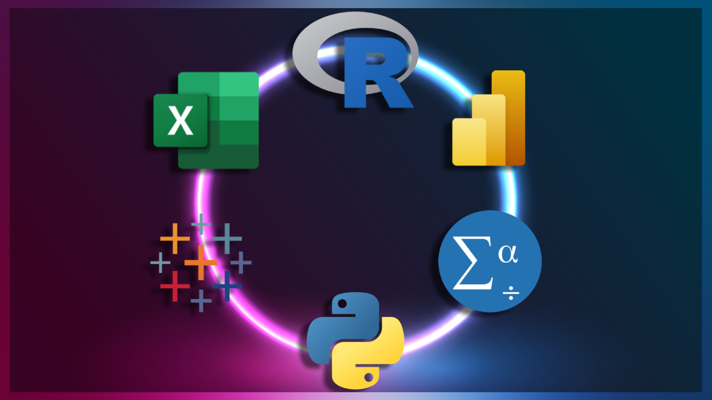

What is I/O Psychology?
Industrial/Organizational Psychology is a field of psychological study that examines human behavior in organizations and the work place. Specifically, I/O Psychologists possess knowledge regarding the application of scientific analysis of individual, group, and organizational behavior. As such, I/O Psychologists utilize an assortment of specialized knowledge and skills to produce insights and affect change. The specialization of an I/O Psychologist encompasses many topics including organizational development and data analysis.
Organizational Development
One area of expertise that defines I/O psychologists is known as organizational development (OD). In short, OD is a structured/evidence-based approach to organizational interventions that primarily focus on organizational effectiveness. Due to the vast number of potential variables involved in human systems, OD practices can focus on many topics such as worker interventions, total quality management, work design, and talent development. Overall, the process of OD generally relies on a work cycle similar to the following diagram.
When it comes to the diagnostic process of OD, I/O psychologists typically rely on existing organizational change models to inform their decision making. One such example of these models is the Burke & Litwin model of organizational performance and change. This is a comprehensive, causal model which draws relationships between inflential organizational factors such as leadership, culture, and structure.
By integrating a model with information from data collection and analysis, I/O psychologists are capable of developing tailored interventions to address organizational concerns.
Data Analysis
In contrast to other psychological disciplines, I/O Psychologists are trained to implement quantitative methods to drive decision-making. The nature of this approach results in an overlap into data analytics professions. Data-driven decision-making has become the norm in the professional world and there are a handful of tools and methods that organizations use to support their operations.
These tools are implemented to perform functions related to data cleaning, data analysis,
database management, and data visualization. Some tools, such as Python and R, are programming languages that can be used to perform statistical calculations.
Others, such as SQL, are utilized to manage data stored in relational databases. There are also data visualization tools such as Microsoft
Power BI and Tableau. Lastly, there are statistical interface platforms such as Microsoft Excel and IBM's SPSS which can be used for both data analysis and data
visualization. While data visualization can be accomplished in R and Python, it is a much more user-friendly process in these statistical interface platforms.
The process of data analysis consists of five steps as detailed below: